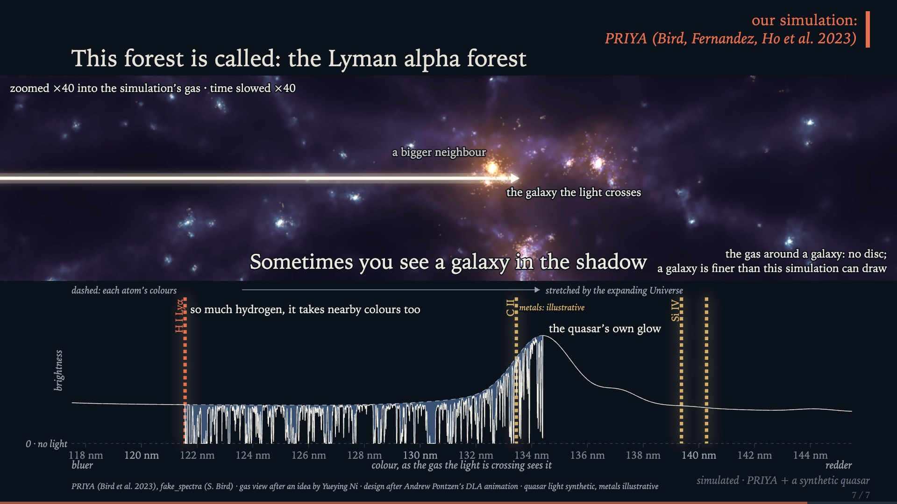

Ming-Feng Ho · Leinweber Foundation site visit · University of Michigan · 29 October 2026

A ten-minute talk for a general audience about the Lyman-alpha forest: how the light of distant quasars, crossing the hydrogen between galaxies, maps the Universe's expansion with DESI's standard ruler and reaches down to the smallest scales, where dark matter's properties start to show. The middle of the talk follows one quasar's light through a PRIYA cosmological simulation, cloud by cloud.
20 slides after the title. It runs in the browser with WebGL 2 and is best in Chrome; the first load is about 71 MB. Code: MIT licence (gl-matrix and the shaders' hash12 keep their own MIT notices); the slides, pictures and films made for the talk: CC BY 4.0. Any image of the PRIYA simulation must also cite the PRIYA simulation paper, Bird, Fernandez, Ho et al. 2023, JCAP 10 (2023) 037, arXiv:2306.05471. DESI's data and the figures the scales slide is read from keep their own terms; the simulation's data files are shared with credit, with no licence of their own. See README.md and LICENSE-CONTENT.md.
DESI Data Release 1 (DESI Collaboration et al. 2026, AJ 171, 285; CC BY 4.0), selected and processed for the slides. DESI DR2 Results I and II (DESI Collaboration 2025, Phys. Rev. D 112, 083514 and 083515). The PRIYA simulations, led by Simeon Bird (Bird, Fernandez, Ho et al. 2023, JCAP 10 (2023) 037; Fernandez, Bird & Ho 2024, JCAP 07 (2024) 029). The full list, and SPARCL's and the Astro Data Lab's acknowledgment, are in README.md.
This research used data obtained with the Dark Energy Spectroscopic Instrument (DESI). DESI construction and operations is managed by the Lawrence Berkeley National Laboratory. This material is based upon work supported by the U.S. Department of Energy, Office of Science, Office of High-Energy Physics, under Contract No. DE–AC02–05CH11231, and by the National Energy Research Scientific Computing Center, a DOE Office of Science User Facility under the same contract. Additional support for DESI was provided by the U.S. National Science Foundation (NSF), Division of Astronomical Sciences under Contract No. AST-0950945 to the NSF’s National Optical-Infrared Astronomy Research Laboratory; the Science and Technology Facilities Council of the United Kingdom; the Gordon and Betty Moore Foundation; the Heising-Simons Foundation; the French Alternative Energies and Atomic Energy Commission (CEA); the National Council of Humanities, Science and Technology of Mexico (CONAHCYT); the Ministry of Science and Innovation of Spain (MICINN), and by the DESI Member Institutions: www.desi.lbl.gov/collaborating-institutions. The DESI collaboration is honored to be permitted to conduct scientific research on I’oligam Du’ag (Kitt Peak), a mountain with particular significance to the Tohono O’odham Nation. Any opinions, findings, and conclusions or recommendations expressed in this material are those of the author(s) and do not necessarily reflect the views of the U.S. National Science Foundation, the U.S. Department of Energy, or any of the listed funding agencies.